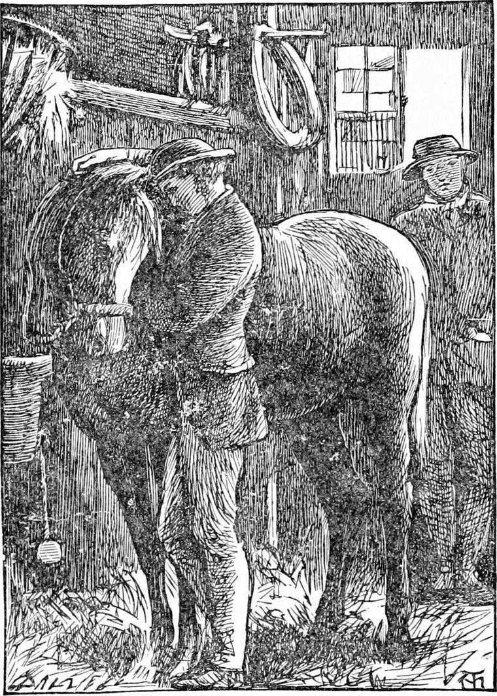

AFTER this Diamond recovered so fast, that in a few days he was quite able to go home as soon as his father had a place for them to go. Now his father having saved a little money, and finding that no situation offered itself, had been thinking over a new plan. A strange occurrence it was which turned his thoughts in that direction. He had a friend in the Bloomsbury region, who lived by letting out cabs and horses to the cabmen. This man, happening to meet him one day as he was returning from an unsuccessful application, said to him:
“Why don't you set up for yourself now—in the cab line, I mean?”
“I haven't enough for that,” answered Diamond's father.
“You must have saved a goodish bit, I should think. Just come home with me now and look at a horse I can let you have cheap. I bought him only a few weeks ago, thinking he'd do for a Hansom, but I was wrong. He's got bone enough for a waggon, but a waggon ain't a Hansom. He ain't got go enough for a Hansom. You see parties as takes Hansoms wants to go like the wind, and he ain't got wind enough, for he ain't so young as he once was. But for a four-wheeler as takes families and their luggages, he's the very horse. He'd carry a small house any day. I bought him cheap, and I'll sell him cheap.”
“Oh, I don't want him,” said Diamond's father. “A body must have time to think over an affair of so much importance. And there's the cab too. That would come to a deal of money.”
“I could fit you there, I daresay,” said his friend. “But come and look at the animal, anyhow.”
“Since I lost my own old pair, as was Mr. Coleman's,” said Diamond's father, turning to accompany the cab-master, “I ain't almost got the heart to look a horse in the face. It's a thousand pities to part man and horse.”
“So it is,” returned his friend sympathetically.
But what was the ex-coachman's delight, when, on going into the stable where his friend led him, he found the horse he wanted him to buy was no other than his own old Diamond, grown very thin and bony and long-legged, as if they, had been doing what they could to fit him for Hansom work!
“He ain't a Hansom horse,” said Diamond's father indignantly.
“Well, you're right. He ain't handsome, but he's a good un” said his owner.
“Who says he ain't handsome? He's one of the handsomest horses a gentleman's coachman ever druv,” said Diamond's father; remarking to himself under his breath—“though I says it as shouldn't”—for he did not feel inclined all at once to confess that his own old horse could have sunk so low.
“Well,” said his friend, “all I say is—There's a animal for you, as strong as a church; an'll go like a train, leastways a parly,” he added, correcting himself.

But the coachman had a lump in his throat and tears in his eyes. For the old horse, hearing his voice, had turned his long neck, and when his old friend went up to him and laid his hand on his side, he whinnied for joy, and laid his big head on his master's breast. This settled the matter. The coachman's arms were round the horse's neck in a moment, and he fairly broke down and cried. The cab-master had never been so fond of a horse himself as to hug him like that, but he saw in a moment how it was. And he must have been a good-hearted fellow, for I never heard of such an idea coming into the head of any other man with a horse to sell: instead of putting something on to the price because he was now pretty sure of selling him, he actually took a pound off what he had meant to ask for him, saying to himself it was a shame to part old friends.
Diamond's father, as soon as he came to himself, turned and asked how much he wanted for the horse.
“I see you're old friends,” said the owner.
“It's my own old Diamond. I liked him far the best of the pair, though the other was good. You ain't got him too, have you?”
“No; nothing in the stable to match him there.”
“I believe you,” said the coachman. “But you'll be wanting a long price for him, I know.”
“No, not so much. I bought him cheap, and as I say, he ain't for my work.”
The end of it was that Diamond's father bought old Diamond again, along with a four-wheeled cab. And as there were some rooms to be had over the stable, he took them, wrote to his wife to come home, and set up as a cabman.